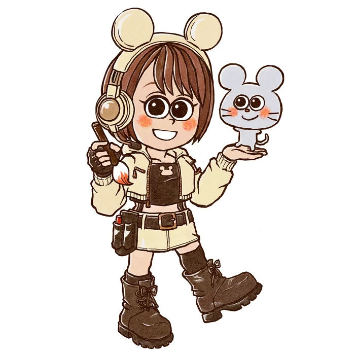

NEZUMIMARU ILLUSTRATIONSCROLL ↓
おえかきやさん・ねずみまる 公式ホームページ
汲んで、描いて、すぐ届く。
あたたかくて、ちょっと楽しい。
まんまる寄り目のなかまたちと、
日々の小さな物語を描いています。
CHARACTER DESIGN
キャラクター制作
コミュニティやブランドの想いを、親しみのあるキャラクターに。


ILLUSTRATION
イラスト作品
季節をめぐる、12枚のイラスト。


LOGO & DESIGN
ロゴ・デザインの制作実績

ねずみまるのロゴ
個人活動用に制作したロゴ。パレットや黒板、キャラクターを組み合わせ、親しみのあるイラストの世界観を表現しています。

CORYU ロゴ・キャラクター
オンラインコミュニティのロゴとキャラクターを制作。花のモチーフを取り入れたロゴと、キャラクターを組み合わせたパスへの展開例です。

SKILL SEEDS GARDEN ロゴ
Discordグループのロゴを制作。文字と芽を思わせるシンボルを組み合わせ、グリーンと白の配色で展開しています。

BANANA GAME LAB ロゴ
オンラインゲーム制作コミュニティのロゴを制作。ゲームコントローラーを思わせるマークとドット表現を使い、縦組み・横組み・単色版へ展開しています。
企業向けロゴ
企業からのご依頼で制作したロゴ。円形のオレンジ色のモチーフと青色の数字を組み合わせています。

しろくま応援団 コーヒーパッケージ
コーヒーのパッケージデザインを担当。文字とイラストを組み合わせた、完成品の写真を紹介します。

モルフォニアシンフォニー
イベントのロゴ・告知ビジュアル制作。

リラクゼーション店のロゴ
リラクゼーションのお店のロゴ制作。

洋書の旅人
YouTubeチャンネルのロゴ制作。
COMICS & GAME ART
漫画・ゲームの世界

ABOUT ME
ねずみまる
げっ歯目似の絵描き・ねずみまるです。
寄り目が特徴のキャラクターを描きます。
挿絵・漫画・間違い探し・アイコン・似顔絵・ロゴ・名刺・人物デフォルメなど。
ご依頼主さまの気持ちを汲んで、はやく描きあげるのが持ち味です。
FOLLOW & LINKS
絵と、日々のこと。
新しい作品や活動は、こちらから。